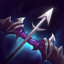
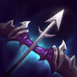
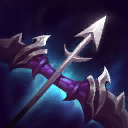
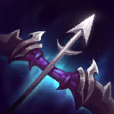

또는
 

또는
구인수의 격노검(구인수) : 주문력 10, 공속 10%. 공격시 공속 5%증가. 곡궁 + 지팡이
쇼진의 창(쇼진) : 공 15%, 주문력 15, 마나 15. 기본 공격시 추가마나 5 획득 대검 + 눈물
무한의 대검(무대,인피) : 공 35%, 치명 35%. 스킬에 치명타 적용 가능. 대검 + 장갑
최후의 속삭임(라위) : 공 15%, 공속 20%, 치명 20%. 상대 공격시 3초간 방깎 30%. 곡궁 + 장갑

죽음의 검(죽검) : 공 50%, 피해량 8%. 대검 + 곡궁

거인의 학살(거학) : 공 25%, 주문력 25, 공속 10%. 최대체력 1750 이상인 적 공격시 피해증폭 25%. 대검 + 곡궁

푸른 파수꾼(블루) : 주문력 15, 마나 20, 공 15%. 최대마나 10 감소. 처치관여시 8초동안 피해증가량 5%. 눈물 + 눈물